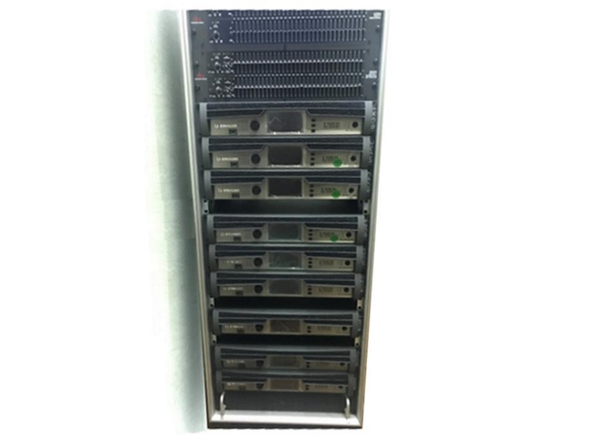

Renovation in the Palace of Culture of the Mozyr Oil Refinery
2022

In 2022, the legendary CROWN amplifiers of the MA 3600VZ series were replaced with new I-Tech series amplifiers for V5 processing (for JBL VT4888/VT4880) in the Palace of Culture of the Mozyr Oil Refinery sound amplification system.
I-Tech 4x3500HD amplifiers were installed – 9 pcs. These amplifiers are equipped with:
- Revolutionary BSS OMNIDRIVEHDTM DSP supporting IIR/FIR filters.
- 4 analog + 2 digital inputs are implemented on XLR connectors (AES3 digital audio streams can be connected).
- 4 independent audio channels operate in stereo mode with a load of 4 ohms up to 4 kW; at 8 ohms – up to 2.1 kW; "bridge" mode is available.
- Flexibility of routing/mixing channels on the principle of "any input-any output".
- VDrive/CobraNetTM interface, providing excellent compatibility and scalability of the system thanks to a simple plug-n-play connection.
- Remote control, signal correction and monitoring of amplifier parameters in real time using HiQnetTM proprietary software via mobile application.
- levelMax, Peak and RMS limiters guarantee high-quality studio-quality sound without distortion and interference.
- On the front panel there is a USB interface for writing/reading user presets.
- 4.3" color LCD display.
- This model implements a conceptually new professional DriveCore technology, which significantly affected the reduction of current consumption of the device, its heat generation during operation, as well as a reduction in weight and external dimensions (19’ 2U at a weight of 13.2 kg).